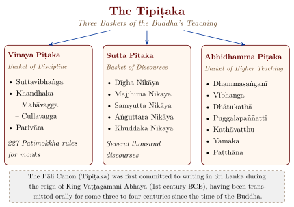

Chapter 3: The Tripiṭaka: Three Baskets of the Dhamma¶
3.1 The Canonical Literature of Buddhism¶
The Tipiṭaka (Sanskrit: Tripiṭaka), literally “Three Baskets,” is the name given to the canonical collections of the early Buddhist schools. The Pāli Tipiṭaka preserved by the Theravāda school is the only early Buddhist canon to survive complete in an Indian language. It is one recension among several: other early schools had their own canons, which survive in part in Sanskrit and Gāndhārī fragments and in Chinese and Tibetan translation. Much of its content goes back to the early centuries of Buddhism, but it also contains later layers (Norman 1983; Gethin 1998).
The term piṭaka means “basket”; it may refer to containers for manuscripts or, as some scholars suggest, to the baskets passed from hand to hand by workmen — an image of transmission from teacher to pupil. The three divisions reflect three dimensions of the Buddha’s dispensation (sāsana; Figure 3.1): the Vinaya Piṭaka, the “basket of discipline”, contains the monastic rules and the narratives of their origin; the Sutta Piṭaka (Sanskrit Sūtra), the “basket of discourses”, contains the teachings of the Buddha and his chief disciples; and the Abhidhamma Piṭaka (Sanskrit Abhidharma), the “basket of higher teaching”, recasts the teaching as a systematic analysis. The tradition’s own view of what the canon preserves is expressed in the recollection of the Dhamma, recited daily in Theravāda monasteries:
Svākkhāto bhagavatā dhammo,
sandiṭṭhiko akāliko
ehipassiko opaneyyiko
paccattaṃ veditabbo viññūhī ti.
Well proclaimed by the Blessed One is the Dhamma, visible here and now, immediate, inviting one to come and see, leading onward, to be experienced by the wise for themselves.
— The recollection of the Dhamma (e.g. AN 3.70; DN 16)

3.2 The Vinaya Piṭaka: The Basket of Discipline¶
The Vinaya Piṭaka constitutes the legal and institutional foundation of the Buddhist monastic community (Saṅgha). It contains the rules of conduct for monks (bhikkhus) and nuns (bhikkhunīs), together with the narratives explaining the circumstances under which each rule was established by the Buddha (Norman 1983; Hirakawa 1990).
3.2.1 Structure of the Vinaya¶
The Vinaya Piṭaka consists of three major divisions:
- Suttavibhaṅga
- The analysis and classification of the Pātimokkha rules — 227 rules for monks and 311 for nuns. Each rule is accompanied by a narrative of its origin (nidāna), a word-by-word commentary, and case studies illustrating its application.
- Khandhaka
- Subdivided into the Mahāvagga (Great Section) and Cullavagga (Minor Section). The Mahāvagga opens with the narrative of the Buddha’s enlightenment and first teachings, and contains regulations for ordination, the observance day (uposatha), the rainy season retreat (vassa), and other communal practices. The Cullavagga deals with disciplinary proceedings, schisms, and the establishment of the order of nuns.
- Parivāra
- A later appendix that provides summaries and catechetical analyses of the rules in the preceding sections.
3.2.2 The Pātimokkha¶
The Pātimokkha (Sanskrit: Prātimokṣa) is the core code of monastic discipline, recited fortnightly by the assembled Saṅgha. The 227 rules for monks are classified into eight categories of decreasing severity (Table 3.1).
| Category | Pāli Term | No. | Consequence |
|---|---|---|---|
| Defeat | Pārājika | 4 | Permanent expulsion from the Saṅgha |
| Formal Meeting | Saṅghādisesa | 13 | Temporary suspension; formal proceedings required |
| Indeterminate | Aniyata | 2 | Determination depends on circumstances |
| Forfeiture | Nissaggiya Pācittiya | 30 | Forfeiture of item and confession |
| Expiation | Pācittiya | 92 | Confession to another monk |
| Confession | Pāṭidesanīya | 4 | Acknowledgement to a monk |
| Training Rules | Sekhiya | 75 | Rules of decorum and etiquette |
| Settling Disputes | Adhikaraṇa-samatha | 7 | Procedures for resolving disputes |
The four pārājika (“defeats”) — sexual intercourse, theft, killing a human being, and false claims of spiritual attainment — are the most serious offences and end a monk’s membership of the order. Each rule is presented with the story of the incident that led the Buddha to lay it down, followed by definitions, exceptions and cases. The Vinaya is therefore a body of case law as much as a list of prohibitions, and it is still the working code of Theravāda monasteries; how it shaped monastic life in practice is described in Chapter 13.
3.3 The Sutta Piṭaka: The Basket of Discourses¶
The Sutta Piṭaka is the largest and most widely read division of the Tipiṭaka. It contains the discourses (suttas) of the Buddha and, to a lesser extent, those of his chief disciples. These discourses cover the entire range of the Buddha’s teaching, from practical ethical guidance to the analysis of the person and of liberation (Norman 1983; Warder 1970).
3.3.1 The Five Nikāyas¶
The Sutta Piṭaka is organised into five collections (nikāya), arranged by the length of their discourses or by principles of grouping that served memorisation.
The Dīgha Nikāya, the collection of long discourses, contains thirty-four suttas. Among them are the Brahmajāla Sutta, a survey of sixty-two speculative views; the Sāmaññaphala Sutta, on the fruits of the contemplative life, which reports the six rival teachers (Chapter 1); the Mahāparinibbāna Sutta, on the Buddha’s last days; and the Sigālovāda Sutta on lay ethics. The Majjhima Nikāya, the middle-length discourses, has 152 suttas covering doctrine, practice and narrative, including the Satipaṭṭhāna Sutta on the foundations of mindfulness, the Ānāpānasati Sutta on mindfulness of breathing and the Cūḷamālukya Sutta with its parable of the poisoned arrow. The Saṃyutta Nikāya groups nearly three thousand short suttas (the count varies between editions) by topic into fifty-six “connected” collections (saṃyutta), among them the first sermon and the main discourses on dependent origination, the aggregates and the sense bases. The Aṅguttara Nikāya arranges its material by number, from ones to elevens, a mnemonic device for oral transmission.
The Khuddaka Nikāya, the “minor” collection, is the most heterogeneous and the least fixed: its contents differ between the Sri Lankan, Thai and Burmese traditions. It contains some of the most widely read texts of the canon — the 423 verses of the Dhammapada, the early verse discourses of the Sutta Nipāta, the Udāna and Itivuttaka, the 547 Jātaka stories, and the poems of the elder monks and nuns (Theragāthā, Therīgāthā), the latter among the earliest collections of poetry attributed to women anywhere.
Na paresaṃ vilomāni,
na paresaṃ katākataṃ;
attano va avekkheyya
katāni akatāni ca.
One should not look at the faults of others, nor at what others have done or left undone; one should consider only what one has done and left undone oneself.
— Dhammapada 50
3.4 The Abhidhamma Piṭaka: The Basket of Higher Teaching¶
The Abhidhamma Piṭaka represents the systematic, analytical dimension of Buddhist thought. While the Sutta Piṭaka presents the Buddha’s teaching in the form of discourses tailored to specific audiences and occasions, the Abhidhamma abstracts from these contextual presentations and offers a comprehensive, impersonal analysis of reality in terms of ultimate constituents (paramatthas).
3.4.1 The Seven Books of the Abhidhamma¶
The Pāli Abhidhamma Piṭaka consists of seven treatises:
- Dhammasaṅgaṇī (Enumeration of Phenomena)
- The foundational text, which classifies all phenomena (dhammas) under the headings of consciousness (citta), mental factors (cetasika), matter (rūpa), and Nibbāna.
- Vibhaṅga (The Book of Analysis)
- A detailed analysis of key doctrinal categories such as the aggregates, sense bases, elements, truths, and faculties.
- Dhātukathā (Discourse on Elements)
- A discussion of how the various categories of the Abhidhamma relate to the elements (dhātus).
- Puggalapaññatti (Designation of Persons)
- A typology of persons according to their spiritual development and psychological characteristics.
- Kathāvatthu (Points of Controversy)
- Attributed by Theravāda tradition to Moggaliputta Tissa at the Third Council under Aśoka, though it grew over a longer period, this work addresses over 200 points of doctrinal dispute among early Buddhist schools.
- Yamaka (The Book of Pairs)
- An extensive logical analysis using pairs of questions to clarify the precise application of doctrinal terms.
- Paṭṭhāna (The Book of Conditional Relations)
- The most voluminous and intellectually demanding text of the entire Tipiṭaka, analysing 24 types of conditional relations (paccaya) among phenomena.
3.4.2 The Abhidhamma Matrix of Reality¶
The later Theravāda Abhidhamma, as summarised in Anuruddha’s Abhidhammatthasaṅgaha (Bodhi 1993), analyses all of reality into four categories of ultimate reality (paramattha-dhamma; Table 3.2).
| Category | Pāli Term | Description | Count |
|---|---|---|---|
| Consciousness | Citta | The knowing function; classified by type and level | 89 (or 121) |
| Mental Factors | Cetasika | Concomitants of consciousness: feelings, perceptions, volitions | 52 |
| Matter | Rūpa | Physical phenomena: the four great elements and their derivatives | 28 |
| Nibbāna | Nibbāna | The unconditioned element; the cessation of suffering | 1 |
3.4.3 The Twenty-Four Conditional Relations¶
The Paṭṭhāna, the seventh and final book of the Abhidhamma, is held in particular reverence in Theravāda countries. It analyses twenty-four types of conditional relation (paccaya) through which phenomena condition one another. Some are relations of cause in the ordinary sense: the “root” condition (hetu) by which greed, hatred and delusion or their opposites underlie a mental state, the “object” condition (ārammaṇa) by which an object conditions the consciousness of it, and the “karma” and “result” conditions (kamma, vipāka) linking an intention to its later fruit. Others are relations of time and dependence: proximity and contiguity (anantara, samanantara) between successive moments of mind, co-nascence and mutuality (sahajāta, aññamañña) between states that arise together, pre-nascence and post-nascence (purejāta, pacchājāta), and support and decisive support (nissaya, upanissaya). The remainder are predominance, repetition, nutriment, faculty, jhāna, path, association, dissociation, presence, absence, disappearance and non-disappearance.
Applied in all their permutations to every class of phenomena, these relations make the Paṭṭhāna the most detailed treatment of conditionality in the Pāli canon.
3.5 Transmission and Preservation¶
The Tipiṭaka was originally transmitted orally through a system of communal recitation. According to tradition the first formal compilation took place at the First Council (saṅgīti, “communal recitation”) at Rājagṛha, shortly after the Buddha’s death, where Ānanda recited the discourses and Upāli the monastic discipline. Historians regard the council narratives as idealised, but they reflect the real practice of communal recitation by which the texts were transmitted (Norman 1983).
According to the Sri Lankan chronicles, the text was first committed to writing in Sri Lanka in the first century BCE, during the reign of King Vaṭṭagāmaṇi Abhaya, after a period of famine and war had threatened the continuity of oral transmission. The councils are summarised in Table 3.3; the last of them, the Burmese council of 1871, had the whole canon inscribed on marble (Figure 3.2).
| Council | Date (approx.) | Location | Significance |
|---|---|---|---|
| First | soon after the Buddha’s death (tradition) | Rājagṛha | Compilation of Vinaya and Sutta Piṭakas |
| Second | about a century later | Vaiśālī | Dispute over ten points of Vinaya; beginning of sectarian divisions |
| Third | c. 250 BCE (Theravāda tradition) | Pāṭaliputra | Under Aśoka; Kathāvatthu; missions sent abroad |
| Writing down | c. 29 BCE (tradition) | Aluvihāra, Sri Lanka | Canon committed to writing (other traditions count a “fourth council” under Kaniṣka in Kashmir) |
| Fifth | 1871 CE | Mandalay, Myanmar | Entire Tipiṭaka inscribed on 729 marble slabs |
| Sixth | 1954–56 | Rangoon, Myanmar | Comprehensive recension of the Pāli canon |

3.6 The Art of Oral Transmission¶
The Tipiṭaka was transmitted orally for some three to four centuries before it was written down, and recitation remained central to monastic life long afterwards. The methods by which the early Saṅgha preserved its texts can be partly reconstructed from the texts themselves.
The System of Communal Recitation
The early Buddhist Saṅgha preserved the canonical texts by communal recitation (saṅgīti). Monks specialised as “reciters” (bhāṇaka) of particular collections: the commentaries speak of Dīgha-bhāṇakas (reciters of the Long Discourses), Majjhima-bhāṇakas (reciters of the Middle-Length Discourses) and others, and early inscriptions at Sanchi and Bharhut already name donors described as bhāṇakas or as knowing the piṭakas. Each group maintained its portion through regular communal recitation, a division of labour that combined specialisation with mutual checking.
The texts themselves show how they were made to be remembered. Stock phrases and refrains recur constantly and served as mnemonic anchors; the Aṅguttara Nikāya arranges its teachings by number; many sections end with a short verse summary (uddāna) that acts as an index; and the question-and-answer form of many suttas gives a natural frame for recitation. Regular group recitation allowed errors to be detected and corrected by the community, which is why the canon, though transmitted orally for centuries, shows a high degree of agreement with the parallel texts preserved by other schools in Chinese and Sanskrit.
3.6.1 Comparison with the Jain Āgamic Tradition¶
The Jain canon (Āgama) was transmitted by similar methods, with one important difference in its history. Jain tradition holds that the fourteen Pūrvas (“former texts”), which contained the oldest teaching, were gradually lost through famine and the failure of memory, and that the surviving Śvetāmbara canon was redacted only in the fifth century CE, at Valabhī; the Digambaras regard the ancient canon as lost altogether. The structure of the Jain canon and the history of its redaction are described in Chapter 8 (Section 8.5); Table 3.4 sets out the main contrasts (Dundas 2002).
| Feature | Buddhist Tipiṭaka | Jain Āgamas |
|---|---|---|
| Language | Pāli (Theravāda); Sanskrit (Mahāyāna) | Ardhamāgadhī Prakrit (Śvetāmbara canon) |
| Compiler(s) | Ānanda (Suttas), Upāli (Vinaya) at First Council (tradition) | Mahāvīra’s chief disciples (gaṇadhara), above all Sudharman (Śvetāmbara tradition); final redaction at Valabhī |
| Written down | c. 1st century BCE (Sri Lanka) | 5th century CE (Valabhī, tradition) |
| Divisions | Three Piṭakas: Vinaya, Sutta, Abhidhamma | 45 texts in six groups for Mūrtipūjakas, 32 for other Śvetāmbaras (Table 8.3) |
| Disputed portions | Abhidhamma: some scholars regard as later | Digambaras hold the ancient canon lost and rely on later scriptures such as the Ṣaṭkhaṇḍāgama |
| Lost texts | Canons of other early schools (mostly lost) | The fourteen Pūrvas (entirely lost) |
3.7 Detailed Analysis of Key Suttas¶
Three discourses show the range of the Sutta Piṭaka: one on meditation, one often misread as a charter of free inquiry, and one on the duties of a householder.
3.7.1 The Satipaṭṭhāna Sutta: Foundation of Mindfulness Practice¶
The Mahā-Satipaṭṭhāna Sutta (DN 22) and its shorter counterpart in the Majjhima Nikāya (MN 10) constitute the most comprehensive meditation instruction in the Pāli Canon. It opens with a strong claim:
Ekāyano ayaṃ, bhikkhave, maggo
sattānaṃ visuddhiyā,
sokaparidevānaṃ samatikkamāya,
dukkhadomanassānaṃ atthaṅgamāya,
ñāyassa adhigamāya,
nibbānassa sacchikiriyāya —
yadidaṃ cattāro satipaṭṭhānā.
““This is the direct path, monks, for the purification of beings, for the surmounting of sorrow and lamentation, for the disappearance of pain and grief, for the attainment of the true way, for the realisation of Nibbāna — namely, the four foundations of mindfulness.””
— Dīgha Nikāya 22
The word ekāyano (“direct” or “one-way”) has been interpreted in various ways: as the “only way,” the “direct way,” or the way that leads to one destination (Nibbāna). Regardless of interpretation, the discourse establishes mindfulness (sati) as the central practice of the Buddhist path.
3.7.2 The Kālāma Sutta: Testing a Teaching¶
The Kālāma Sutta (Aṅguttara Nikāya 3.65) is often cited as the Buddha’s “charter of free inquiry” — a statement of intellectual independence that has appealed strongly to modern readers (Bodhi 2012):
Mā anussavena, mā paramparāya,
mā iti-kirāya, mā piṭaka-sampadānena,
mā takkahetu, mā nayahetu,
mā ākāra-parivitakkena,
mā diṭṭhi-nijjhānakkhantiyā,
mā bhabbarūpatāya,
mā “samaṇo no garū” ti.
““Do not go by oral tradition, by lineage of teaching, by hearsay, by a collection of scriptures, by logical reasoning, by inferential reasoning, by reflection on reasons, by the acceptance of a view after pondering it, by the seeming competence of a speaker, or because you think: ‘This ascetic is our teacher.’ ” The passage continues: when you know for yourselves that certain things are unwholesome and lead to harm, abandon them.”
— Aṅguttara Nikāya 3.65
The criteria the sutta offers are practical and ethical: whether a teaching, when adopted, leads to greed, hatred and delusion or to their absence, and whether it is blamed or praised by the wise. Read in context, it is advice to a bewildered audience on how to judge rival teachers, not a general licence to accept only what one finds reasonable; the same discourse goes on to describe the practice of the divine abodes and ends with the Kālāmas going for refuge to the Buddha (Bodhi 2012).
3.7.3 The Sigālovāda Sutta: The Layperson’s Code of Ethics¶
The Sigālovāda Sutta (DN 31), sometimes called “the layperson’s Vinaya,” provides a comprehensive ethical framework for householder life, covering duties towards parents, teachers, spouse, friends, servants, and religious practitioners (Table 3.5). Its systematic treatment of social ethics has been compared to the comprehensive ethical codes found in Jain lay practice (śrāvakācāra).
| Direction | Relationship | Key Duties |
|---|---|---|
| East | Parents | Support, honour, maintain the family traditions, be worthy of inheritance |
| South | Teachers | Rise to greet, attend upon, listen eagerly, serve, learn the arts |
| West | Wife (and children) | Courtesy, faithfulness, handing over authority in the home, provision of adornments |
| North | Friends | Generosity, kind speech, acting for welfare, equality, honesty |
| Nadir | Servants/Workers | Assign work according to ability, provide food and wages, care during illness |
| Zenith | Ascetics/Brahmins | Acts of love in body, speech, and mind; keep one’s home open; supply needs |
3.8 The Abhidhamma Analysis of Mind¶
The canonical Abhidhamma books and the later manuals do not add new doctrines so much as restate the teaching of the suttas in impersonal terms. Where a sutta speaks of “a person” who feels or decides, the Abhidhamma speaks of momentary events of consciousness (citta) accompanied by mental factors (cetasika), in the categories summarised in Table 3.2. The result is a detailed phenomenology of experience, which modern scholars have compared, with due caution, to topics in the philosophy of mind (Gethin 1998; Bodhi 1993). Two features illustrate its character: its theory of momentariness and its analysis of the process of perception.
Scholarly Note: Momentariness
The Abhidhamma’s analysis of a single moment of consciousness (citta-kkhaṇa) as consisting of three sub-moments — arising (uppāda), standing (ṭhiti), and dissolving (bhaṅga) — each of inconceivably brief duration, is an early and systematic analysis of the moment-to-moment structure of experience. The commentaries say that many billions of such moments pass in the time of a lightning-flash or the blink of an eye — a way of expressing their extreme brevity rather than a measurement. This radical impermanence at the finest temporal scale provides the experiential basis for the doctrine of anicca (impermanence) and anattā (non-self).
3.8.1 The Process of Consciousness (Citta-vīthi)¶
The commentarial Abhidhamma describes a sense-cognition as a sequence of seventeen consciousness-moments (citta-kkhaṇa). The resting stream of consciousness (bhavaṅga) is disturbed by an object and cut off; the mind adverts to the sense door (pañcadvāra-āvajjana); a moment of sense consciousness, such as seeing, arises; it is received (sampaṭicchana), investigated (santīraṇa) and determined (voṭṭhapana); seven moments of “impulsion” (javana) follow; and two moments of registration (tadārammaṇa) close the process before the mind sinks back into the life-continuum. The scheme is ethical as well as descriptive. The javana moments are the karmically active phase, in which the mind responds to what it has perceived with greed or generosity, hatred or friendliness; everything before them is the result of past karma, and everything that matters for the future is decided in them.
3.9 The Early Schools and the Sarvāstivāda Abhidharma¶
The Pāli canon is the canon of one school among many. Indian Buddhist sources speak conventionally of “eighteen schools” (nikāya), although the lists differ and more than eighteen names are known (Lamotte 1988; Hirakawa 1990). After the first division between the Sthaviras and the Mahāsāṅghikas, the Sthavira branch gave rise, among others, to the Sarvāstivāda, the Dharmaguptaka, the Mahīśāsaka, the “personalist” Vātsīputrīya–Sāṃmitīya group and the Theravāda of Sri Lanka. The schools were defined above all by their monastic codes, and several of their Vinayas survive: the Dharmaguptaka Vinaya, in Chinese translation, became the standard code of East Asian Buddhism, and the Mūlasarvāstivāda Vinaya, preserved in Tibetan and in part in Sanskrit, became that of Tibet.
The most influential Abhidharma outside the Theravāda was that of the Sarvāstivāda, strong in Kashmir and the north-west. Its name (“the doctrine that everything exists”) refers to its distinctive thesis that dharmas exist in the past and the future as well as in the present, which it used to explain memory, knowledge of the past and the delayed ripening of karma. Its doctrine was codified in the great commentary Mahāvibhāṣā, compiled in Kashmir in the early centuries CE; tradition connects it with a council held under the Kuṣāṇa king Kaniṣka. The “Vaibhāṣikas”, who followed this commentary, analysed experience into seventy-five dharmas in five groups: eleven material dharmas, mind, forty-six mental factors, fourteen factors “dissociated from mind” and three unconditioned dharmas, namely space and two kinds of cessation (Williams and Tribe 2000; Gethin 1998).
Vasubandhu’s Abhidharmakośa (“Treasury of Abhidharma”), some six hundred verses in eight chapters with the author’s own prose commentary and an appendix refuting the “person” of the personalists, set out the Vaibhāṣika system while criticising many of its positions from the standpoint of the Sautrāntikas, who denied the existence of past and future dharmas and held that every conditioned thing lasts only a moment. (Whether this Vasubandhu is the same person as the Yogācāra author of that name is debated.) The Kashmiri master Saṅghabhadra wrote a long rebuttal defending Vaibhāṣika orthodoxy, but the Abhidharmakośa became the standard textbook of Abhidharma in India, Tibet and East Asia, and its categories and arguments formed the background against which Madhyamaka, Yogācāra and the Buddhist logicians worked. The Abhidharma schools are placed among the other Indian philosophical systems in Volume 3 of this series (Darśana Darpaṇa).
3.10 Other Canonical Traditions¶
The Pāli Tipiṭaka is the most complete surviving canon of an early school, but it is not the only witness to early Buddhism. The Chinese Buddhist canon (Dazangjing) contains translations of the discourse collections (Āgamas), Vinayas and Abhidharma treatises of several other early schools, together with Mahāyāna and tantric texts and Chinese works. The Tibetan canon, the Kangyur and Tengyur, preserves the Mūlasarvāstivāda Vinaya and a large body of later Indian literature. Fragments of the Sanskrit canons of the Sarvāstivāda, Mūlasarvāstivāda and other schools have been recovered from Central Asia, Gilgit and Gandhāra, and the Gāndhārī birch-bark scrolls (1st century BCE–2nd century CE) are the oldest Buddhist manuscripts known. Comparison of these parallel versions with the Pāli is the main method by which scholars now identify the early core of the tradition.